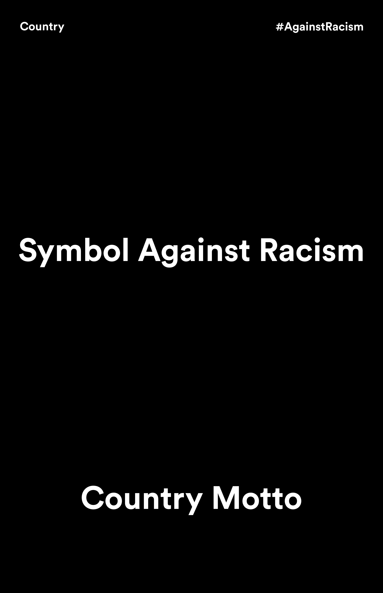
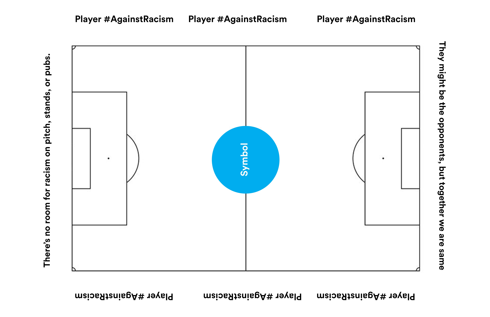

FIFA #AgainstRacism Campaign
This project was made for my Core 2: Typography Lecture class at Parsons during the Spring 2022 semester. The prompt was to create an a set of poster for a social campaign. I focused on creating poster for FIFA's #SayNoToRacism campaign as it was the year of the world cup and after the UEFA Euro 2020, racism and racist abuse surrounding football and footballers peaked.
Ideation
The initial idea was to create a campaign that's personalised for different countries, leagues, clubs, languages, and culture, instead of using a single campaign design. The idea was to create a system that incorporates the message in a familiar format and adopts the brand, culture, and language of the respective team, country, league, or club.
The idea was to display this campaign during the game, on the pitch-side boards and advertising boards.


The idea was to display this campaign during the game, on the pitch-side boards and advertising boards.
Execution
This project was created on InDesign. During the research phase, I researched what slogans, chants, sayings, and players were popular amongst fans of different national teams and clubs. Then I followed to create the posters inspired by their jerseys, stadiums, home colours, and flags.


The above motion graphics are to be displayed on the score board and advertising board. The above example is targeted for Manchester City FC, and English Premier League Club, which is governed by The Football Association. The motion graphics incorporates colours of MCFC, EPL, and FA. Loved the posters? Want to print them? Click on the link below to download them!
Oh...and one last thing, Força Barça!
Oh...and one last thing, Força Barça!